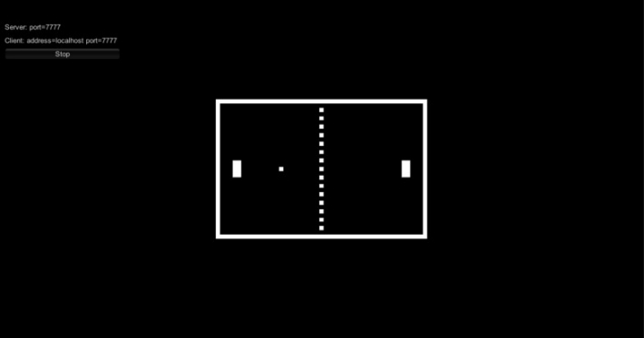
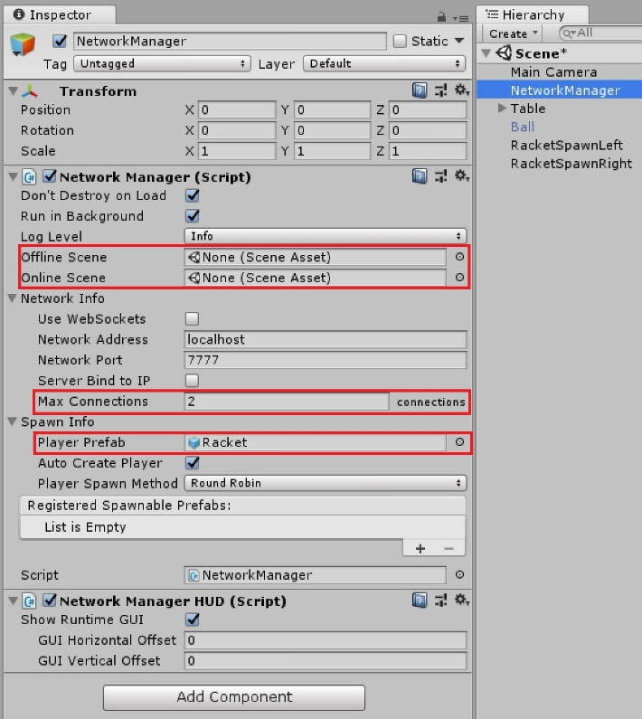
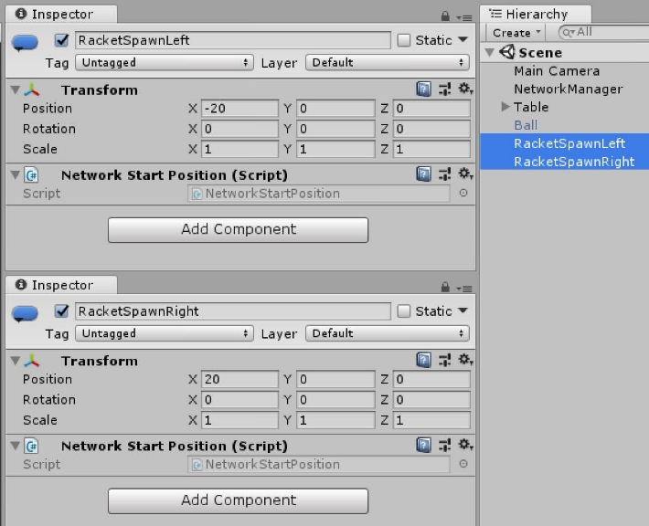
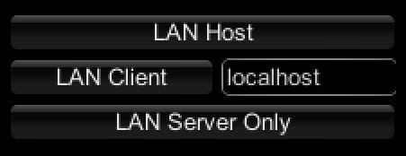

Pong
A simple example for "How to built a multiplayer game with Mirror" is Pong, which is included in the AssetStore package of Mirror. It illustrates the usage of NetworkManager, NetworkManagerHUD, NetworkBehaviour, NetworkIdentity, NetworkTransform, NetworkStartPosition and NetworkingAttributes.

Setting the number of players
First of all, let's have a look at the NetworkManager object in the main scene. When adding the NetworkManager component to a gameobject, a few default settings are already set (Don't destroy on Load, Run in Background, ...) For playing Pong the maximum number of players is 2, so the setting Network Info/Max connections will also be 2. As there are no other scenes (room, online or offline scene) in this sample the properties for Offline Scene and Online Scene will stay empty.
Creating the player
Furthermore every player needs a racket to play with. Each player who joins the game will have his own controllable object, which represents him within the game. This gameobject is called PlayerObject. For spawning the PlayerObject a prefab has to be created, containing at least a NetworkIdentity component with Local Player Authority checked. The Local Player Authority allows the player to control and modify the gameobjects properties (e.g. for movement). The NetworkManager needs a reference to this prefab, which is located in Spawn Info/Player Prefab. To have the player movement synchronized over the network, the player prefab also contains a NetworkTransform.

Player start position
The main scene contains 2 gameobjects with only a NetworkStartPosition component (gameobjects RacketSpawnLeft, RacketSpawnRight in the scene). These transforms will be automatically registered by the NetworkManager as spawning positions.

Setting up the network
A very convenient component for establish/testing connections is the NetworkManagerHUD. It provides basic functionality for start a game as Client, Server, or Host (Client and Server at the same time). It requires the NetworkManager component.

The ball of Pong
The ball is the main focus of Pong, as this is the object needed to score points. Its NetworkIdentity component has neither Server Only nor Local Player Authority checked, as it's moved by the server physics engine and can be influenced by the players. As with the PlayerObject the position is synchronized via NetworkTransform. When having multiple scenes, the ball can be spawned by the NetworkManager, but to keep this sample simple, it's placed directly within the main scene.